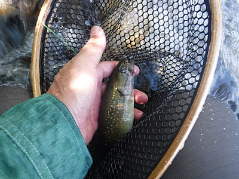
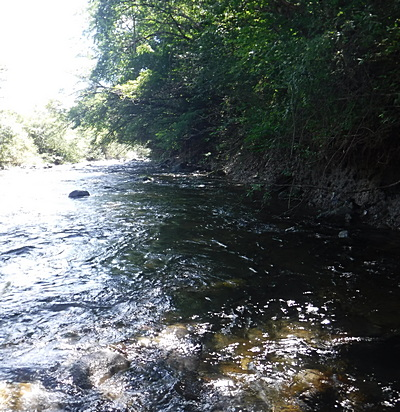
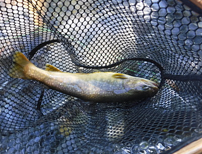
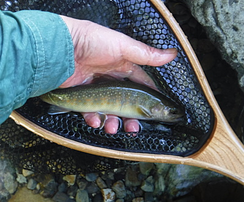
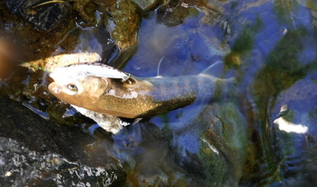
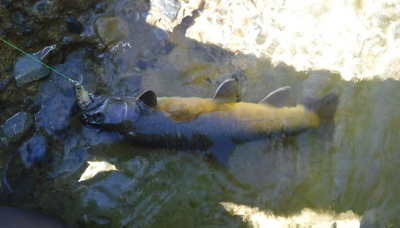
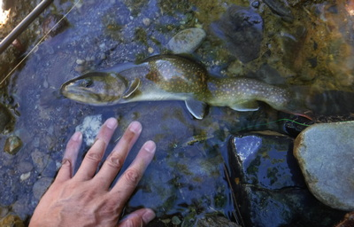
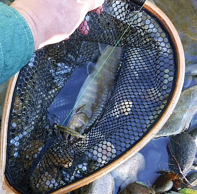
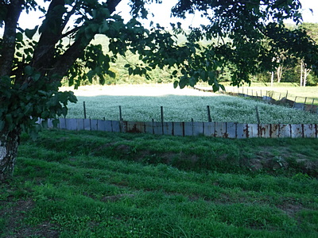

釣行日誌 故郷編
2018/08/26 一発の銃声
今朝はバイクで出かけて８時10分前にガソリンスタンドに着いた。ここで格安レンタカーを午前８時から明朝の８時まで、24時間借り出すのだ。先週、8月19日に経験した高原の里川でのチャラ瀬区間爆釣に味を占めて、今日は叔父に内緒で抜け駆けして、実に2006年以来の単独釣行である。ネットでチェックすると、いつもの里川近くの観測地点では、３日前からの累積降雨量が85mm。こりゃ少しは増水が期待できるかな。
レンタカーの手続きを済ませ、小型車を借り、自宅に戻って大荷物とロッドケースを積み込み出発だ。いつもは叔父がのんびりと約200kmほどの一般道をトコトコと走って行くのだが、今日は気が急いているので贅沢をして高速道路を使う。ナビの着いていない格安クラスの車なので、ジャンクションの案内標識を見ながら道を間違えないよう慎重に高速を走る。
高速を降りて一般道を１時間ほど走ったところのセブンイレブンで休憩がてらお昼のお弁当と入漁券を買う。レジのおばさんが、
「あら、釣りね。どこまで行くの？」
と訊ねるので、目的地を告げると、
「たくさん釣ってきてね。それと、あの辺はクマに気を付けてね！」
と忠告してくれた。
集落最上流の橋詰めの空き地に着いたのが昼12時半。心ここにあらずで急いで弁当をたいらげ、何かに追われるように慌てて釣り支度をする。そのせいで、せっかく用意してきた地図とヘッドランプ、携行食をベストに入れ忘れてしまう。後で気づいたのだが.......
今日も写真を取り損ねた４月の大物のことが忘れられず、あの堰堤から入渓する。水量は、先日の雨で約10cmほど増水して、ルアーには絶好のコンディションである。ミノーは先週の実績より、ヤマメカラー５Fを選択。堰堤下の護床ブロックの上に立ち、下流の深み目がけて遠投する。大物が飛び出してきたブロックの隙間あたりを狙ってミノーを通してみるが反応は無い。それでは、と、反対側の繁みの下を通過させてくると、コツッ！と鋭いアタリ。繁みの下を流れる激しい流れを利用して抵抗し、なかなか上がって来ない。ドラグが出るほどではないが、今日の１発目なので慎重にネットに取り込む。

あとちょっとで「まずまず」の型と言えそうな、25cm級のイワナだった。気を良くして付近を探ってみるが、そこではその１尾止まりであった。
さて、いつもならここで叔父と一緒に次のポイントへ向けて車で移動するのだが、今日はこれまでにまったく行ったことの無いこの堰堤下に続く区間を攻めようと、地形図を調べて計画してきたのだ。小径をいったん上の畑まで上がり、林の中に歩み込んで下流側へと進み、水際に降りられそうな場所を探す。なにぶん初めてなので、全てが手探り状態である。10mほど進むと、ちょっとした崖があり、立木の枝に掴まれば岸に降りられそうだったので、ロッドに気を付けながら短パンのお尻を破かないようズリズリと滑り降りる。下流は一面のチャラ瀬が延々と続いており、所々丸石が頭を出している。先週の体験からするとなかなか期待が持てそうである。
対岸にミノーを投げ、流れに乗せて扇形に引いてくると、小さなイワナが追って来るのが見えた。しかしバイトには至らない。その下流の、自分が立っている右岸側に、藪の被ったかすかな深みが見えた。

『あそこはイケルな.......』
期待しつつルアーを投げる。ダウンストリームの釣りなので、しゃかりきになってリーリングする必要も無く、水流を受けて自分でアクションするミノーに時折トウィッチを入れるだけのお気楽な釣り下がりである。
「ググッ！」
『よし来たっ！』
ロッドを立てると心地よい感触が伝わってくる。しばしファイトを楽しんでからネットにすくい込む。こちらも嬉しい25cm級の１尾である。

そこから下流では、絵に描いたような好ポイントは少ないが、多少なりとも深みや石裏の淀み、ボサの陰などがあり、探ってみると何らかの反応があった。釣れてくるのは小さいのがほとんどだったけれど、反応が途切れないので興奮する。

釣り始めてから２時間ほど釣り下ると、川底の泥岩？を水流が削り取って出来たような細長い淵に出くわした。淵の頭は白泡ブクブクが長く続いていたが、渕尻には魅力的な緩い流れの深みがある。イワナの好きそうなポイントだ。遠投して渕尻の落ち込みあたりまで投げ、しばらくそのままで保持してミノーを勝手に泳がせてから巻き始める。
「ドスンッ！」
とはちょっと大げさな表現だが、荒っぽいアタリがあって魚の抵抗が始まる。長い距離を渕尻から淵の頭まで流れに逆らって寄せてこなければならないので、相当手こずる。焦ってバラさないよう、また取り込みで場を荒らさないよう気を付けてその１尾を水辺の岩場に寄せた。ミノーの腹のフックをしっかりと咥えていた。これも25cm級であった。

このポイントならまだ出るだろうと、再びキャスト。渕尻あたりでまたロッドが重くなり、ラインの先からの生体反応がどんどんと底深く潜って行く。
『これはちょっと大きいかな？』
期待しながら巻き寄せてくると、淵の中ほどでまったく動かなくなってしまった。
『あれェ？ おかしいなぁ？』
ロッドをあおってみても根掛かりの感触である。どうやら魚が咥えていない方のフックが川底の泥岩に引っ掛かったらしい。
『こりゃ困ったぞ.......』
少し下流に歩み寄ってさらに２、３度あおってみたらようやく外れたようで、ラインの先で魚が泳ぎだした。また長い距離をやや強引に寄せてくると、やはり25、26cmくらいの良型であった。よく外れなかったなぁと安堵した。

さらに同じ淵のやや左岸寄りの岩陰にミノーを通してくると、ガクンとショックがあり、今までとは違う段違いの重さが伝わってきた。しかし重いことは重いのだが、あまり横走りはしない。単に自重で抵抗しているだけ、という感じである。水中で抵抗する魚影が見えた。大きい！ ネットを外して慎重に構え、じっくりと寄せてきてランディングする。楽に尺は越えていそうな魚体だが、見てびっくり。背骨が大きく湾曲している。まるで塩焼きのために串に刺されたような曲がり方だ。

先天的な奇形か、生まれた後の病気によるものかは判りかねたが、おそらくは放流されたときからこんな体だったのだろう。ひどいハンディキャップを乗り越えて、よくぞここまで大きくなったものだとけなげに思え、感心した。めったに使わない裁縫用の小型メジャーをポケットから取り出して計ってみると、34cmあった。背筋をピンと伸ばしてくれたら37cmくらいはあるかもしれなかった。（笑）
背曲がりの大物を含めてこの細長い淵では良型３連発であった。いつもと比べれば望外の好釣果である。気を良くしてさらに釣り下って行く。
木立に囲まれた薄暗い堰堤があった。堰堤の上流側はフラットではあったがブッシュに覆われて陰になっており、イワナが好む渓相である。左岸側から斜めに流れ込む主流が右岸の藪の下にぶつかって、やや深みが出来ている。中央の丸石のあたりにミノーを投げ込んで、ラインはフリーにしてそのまま深みへと流し込んでいくと、いきなり水しぶきが上がった。魚が水面のミノーに飛び出したのだ。こんなことは初めての体験だったので、とても驚いた。
『あそこに居たか！』
再度キャストをしてみるが、なぜかもう反応は無かった。ミノーを咥えて違和感を覚え、身を隠してしまったのかもしれなかった。
堰堤の下は大きな淵ではなかったが、白泡の立つ深みが存在し、右岸奥には怪しげな藪下のポケットがあった。枝に掛けないよう、慎重にポケット目がけてミノーを打ち込み、流心の白泡の切れ目まで引いたところでガツン。ロッドが引き絞られる。なかなかのファイトを見せて寄せられて来たのはこれもよく太ったコンディションの良いイワナだった。腹のフックをがっちりと咥えている。

その薄暗い堰堤から下流には、沢の合流点、木陰に覆われた長い淵、幅の広い堰堤など好ポイントが連続していたが、不思議と反応が無く、橋の下の長いトロ淵までやって来た。トロ淵の頭に静かに歩み込み、ロングキャストでミノーを打ち込み、自分が立っている左岸側の葦の根元を引いてくる。ロッドティップまであと数メートルの所でガクンとショックがあり、ブルブルと竿が震え、魚が暴れた。しかしあまりに近すぎたためか、一瞬でバレてしまった。こりゃ残念.......と悔しがったが、気が付くといつの間にか時刻は５時近くになっていた。今日の午後は大小取り混ぜて12尾。久しぶりに「つ」が抜けた。バラシも多かったけれど。
喉が渇いて疲れも感じ、少々腹も減っていたので今日はここらへんで切り上げようと、土手まで這い上がれそうな草むらの斜面が見えた幅広の堰堤まで戻った。さっき土手の上を軽トラックが走って行くのが見えたので、きっと農道があるに違いなかった。
堰堤上のザラ瀬を渡り、草むらを藪漕ぎして這い上がり、なんとか農道へ出た。その農道は上流側の入渓地点の方へと続いていたので、そこを歩いて戻ることにして、今日の釣りの満足感に浸りながらテクテクと車を目指した。途中で農道が分かれており、右側は川に近い方の林に向かっており、左は舗装された村道へと続いているらしかった。林の方はどうも行き止まりになりそうに見えたので、急がば回れと、左へ進み村道へ出てから村の外れ目指して歩き続けた。蕎麦畑の満開の花が白く美しい。子供の頃に母が作ってくれた混ぜ物無しの素朴な、しかし素晴らしく美味しかった蕎麦の味が懐かしく思い出された。

最後の集落が見えたあたりで、突然、「パァーン！」という乾いた音が聞こえた。
『夏休みも終わり近くで、子供が花火でも打ち上げたかな？』
などと思いながらのんきに歩いて集落まで戻って来ると、軽トラックが２台停めてあり、誰も人は居ない。橋詰めに停めたレンタカーに戻り、トランクを開けてウェーディング用品一式を入れておく大きな防水スタッフバッグを出して地面に敷く。
「どっこいしょ」
そんな声を思わず口に出して腰を降ろすと歳がバレるが、半日釣行の疲れが出た。濡れて重いウェーディングシューズをおもむろに脱ぎ、タイトなネオプレンソックスとタイツも苦労して脱ぎ、ビショビショの靴下を脱ぐとようやく楽になれる。タオルで足を拭いて乾いた靴下とズボンを履くと生気がよみがえるような気がする。次はロッドをバラして布袋に仕舞う。そんなこんなを人気の無い空き地でやっていると、橋向こうの農家からおばさんが、青い顔をして駆け寄ってきて、
「あんた今日、クマに遭いませんでしたか？」
と聞いてきた。
「ええっ！出たんですか？」
見ると、さっきの軽トラックの周りには、オレンジ色のベストを着て猟銃を担いだ猟友会のおじさんたちが３、４人。
さっきのあの音は威嚇射撃だったのか！音の聞こえたあたりは、ズバリ本日の藪漕ぎ入渓地点.......
集落内の一斉放送では、さきほど当地区で熊が目撃されました。村民の皆様十分お気を付け下さい。などと大音量で告げていた。
やはり単独での釣行は怖い。アメリカの森林警備隊御用達というクマ避けスプレーを買おうかな.......
釣行日誌 故郷編 目次へ
サイトマップ
ホームへ
お問い合わせ